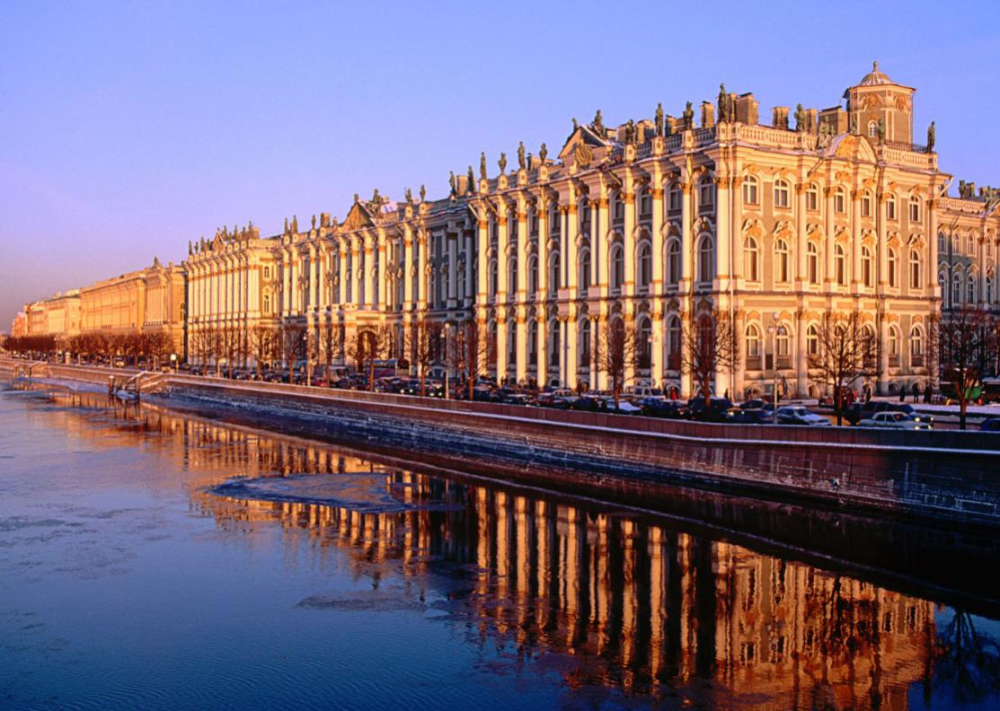

Choosing the right major and institution for studying in Russia is very important, but many students, due to lack of understanding of Russian majors, tend to choose majors that don't suit them, leading to future regrets. Below, we will analyze the three most promising majors in Russia for you. 1. Art Majors Russian art majors are also well-known internationally. Fine Arts include the Repin Academy of Fine Arts、...

Choosing the right major and institution for studying in Russia is very important, but many students, due to their lack of understanding of Russian majors, tend to choose majors that don't suit them, leading to regret in the future. Below, we will analyze the three most promising majors in Russia for you.1. Arts
Russian art majors are also internationally renowned. Fine arts include the Repin Academy of Fine Arts, Surikov State Art Institute, and Saint Petersburg Art and Design Institute; music majors include the Tchaikovsky Conservatory and Saint Petersburg Conservatory; Sports programs include the Russian State Sports Academy and Saint Petersburg State Sports Institute; Some national universities of culture and arts and comprehensive universities offer world-class teaching quality. Russia itself is also a country rich in artistic atmosphere. Especially St. Petersburg, a very Europeanized city where you can see Western Renaissance sculptures, paintings, and exquisite buildings everywhere.
2. Economics
Economics majors only became popular in Russia in the 1980s. As the economy shifted from a planned economy to a market economy, people's economic concepts fundamentally changed. Studying economic development laws and learning to master and control markets became hot topics, and economics majors became the popular choice for university students. Russia's reforms have provided us with many experiences and lessons to draw from, and studying economics courses at Russian universities also provides us with more material.
3. Medical Fields
Russian medicine is also world-class internationally, with St. Petersburg Pavlov Medical College, Shedonov Medical College, Moscow University Medical Faculty, and others all having long histories and brilliant achievements. These universities offer comprehensive majors, advanced facilities, rigorous teaching, and have trained many renowned medical experts. It is believed that outstanding students from these universities will surely make significant contributions in the domestic medical community.
一、艺术类
俄罗斯艺术类专业在国际上也很有名气。美术类有列宾美院、国立苏里科夫艺术学院、圣彼得堡艺术设计学院、音乐类有柴可夫斯基音乐学院、圣彼得堡音乐学院；体育类有俄罗斯国立体育学院、圣彼得堡国立体育学院；还有一些国立的文化艺术大学以及综合类大学的美术系都能提供世界一流的教学质量。俄罗斯本身也是一个充满艺术氛围的国家。尤其是圣彼得堡，一个非常欧化的城市，到处可以看见西方文艺复兴时期的雕塑、绘画作品和精美的建筑物。
二、经济类
经济类专业是80年代才开始在俄罗斯热起来的专业。从计划经济转变为市场经济，人们的经济观念也起了根本的变化，研究经济发展规律，学会掌握和控制市场成了热门话题，经济类的专业也随之成为大学生选择的热门专业。俄罗斯的改革给我们提供了许多可以借鉴经验和教训，在俄罗斯的大学里学习经济类的课程也同样能给我们提供更多的素材。
三、医学类
俄罗斯的医学在国际上也是首屈一指，圣彼得堡巴甫洛夫医学院、谢东诺夫医学院、莫斯科大学医学院等都有着悠久的历史和辉煌的业绩。这些大学专业齐全，设施先进，教学严谨，培养出了许多着名的医学专家。相信在这些大学里出来的优秀学生一定会在国内的医学界有所作为。
English edition. Select 中文原文 to compare with the original Chinese article.
This article is edited and published by Liaoning Overseas Study Service Co., Ltd. The content is for study abroad planning reference only. Unauthorized reproduction is prohibited.
Information on policies, regulations, admissions brochures, and program fees is timely. Please refer to the latest releases from official institutions and institutions in various countries; For detailed verification, please Contact an advisor。